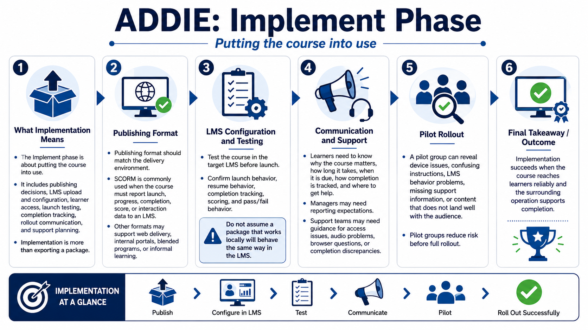

Implement - Delivering the Course
Connecting to LMS... Progress: in progress

Narration
The Implement phase is about putting the course into use. It includes publishing format decisions, LMS upload and configuration, learner access, launch testing, completion tracking, rollout communication, and support planning. Implementation is more than exporting a package. It is the operational work that ensures learners can actually launch, complete, and be credited for the course.
Publishing format depends on the delivery environment. A SCORM package is commonly used when a course needs to communicate launch, progress, completion, score, or interaction data to an LMS. Other formats may be used for web delivery, internal portals, blended programs, or informal learning. The format should match the tracking and access requirements identified earlier.
LMS configuration should be tested before launch. Confirm the course opens correctly, resumes as expected if resume is required, tracks completion, reports score if applicable, and behaves correctly for failed or passed assessments. Do not assume a package that works locally will behave the same way in the target LMS. Launch testing is part of implementation quality.
Implementation also includes communication. Learners may need to know why the course matters, how long it takes, when it is due, how completion is tracked, and where to get help. Managers may need reporting expectations. Support teams may need answers for access problems, audio issues, browser questions, or completion discrepancies.
Pilot groups can reduce risk. A small rollout can reveal confusing instructions, device issues, LMS behavior, missing support information, or content that does not land with the audience. Implementation succeeds when the course reaches learners reliably and the surrounding operation supports completion.